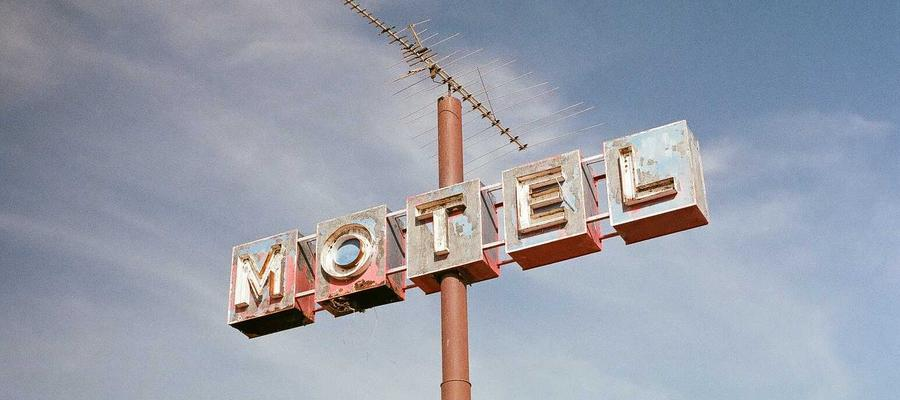

Frequently Asked Questions
Is Crawl Test Site a real company?
No. Every name, bio, and quote on this site is a placeholder.
What is this site actually for?
It's a static fixture used to test recurring web-crawl change detection, including link discovery and content-change detection across pages and images.
Why does the navigation live in its own <nav> tag?
Some crawlers exclude <header>, <footer>, <aside>, and <form> from link discovery. Keeping navigation in a plain <nav> ensures every page is reachable.
Are the images free to use?
Yes. Photos come from Lorem Picsum, which serves freely usable stock photography with no attribution required.
Content marker: faq-v1